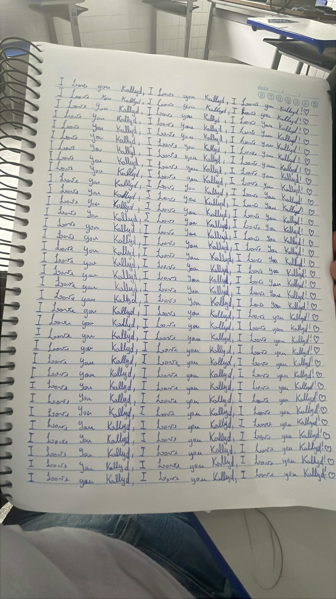

| Tipo / Elemento Analisado | Traços Comportamentais Mapeados | Códigos de Validação | Interpretação do Bloco |
|---|---|---|---|
| MS Inanalisável | - | - | Margem superior sem elementos suficientes ou padrão de difícil mensuração para fins analíticos. |
| ME Regular Equilibrada | Temperança (0), Elevação (11) | P12 | Margem esquerda indica autocontrole, respeito a limites e busca por evolução pessoal harmoniosa. |
| MD Irregular Estreita | Impaciência (5), Desmedida (6) | N12 | Sinaliza pressa, impulsividade em decisões e propensão a reações emocionais desproporcionais. |
| Clara | Coerência (1), Sinceridade (1), Clareza (1), Acessibilidade (3), Adaptação (3), Improvisação (4) | P20 P26 | Excelente comunicação, transparência, flexibilidade para lidar com mudanças e facilidade de entrosamento. |
| Constante | Disciplina (4), Perseverança (5) | P9 P21 | Garante estabilidade operacional, resiliência e foco contínuo nas metas de longo prazo. |
| Agrupada Primária | Insegurança (9), Constrangimento (9), Imprecisão (10), Irrealidade (10) | N7 N8 | Indica momentos de hesitação e percepções subjetivas que podem afetar o foco prático. |
| Pequena | Seriedade (0), Atenção (2), Perspicácia (2), Concisão (2), Precisão (4), Dedução (12) | P5 P6 P13 P15 | Mente analítica, focada em detalhes, dotada de raciocínio lógico agudo e alto poder de síntese. |
| Alta | Autoconfiança (2), Independência (5), Persuasão (12), Altivez (12) | P4 P16 N20 | Postura autônoma e forte poder de convencimento, com riscos pontuais de soberba ou vaidade excessiva. |
| Retilínea | Moderação (0), Autocontrole (0), Estabilidade (0), Equilíbrio (0), Clareza (1), Dedução (12) | P6 P20 P24 P26 | Raciocínio lógico linear, estabilidade nas convicções e forte autocontrole diante de pressões. |
| Horizontal | Autocontrole (0), Equilíbrio (0), Estabilidade (0), Concentração (1) | P18 P24 | Firmeza de propósito, manutenção do foco operacional e constância nas atitudes diárias. |
| Alternada Indecisa | Indecisão (8), Incerteza (9), Insegurança (9), Inconstância (10) | N7 N28 | Aponta para oscilações de ânimo, dúvidas em momentos críticos e variações no ritmo de trabalho. |
| Cursiva | Sensatez (0) | P8 P20 | Agilidade mental combinada com maturidade prática e bom senso nas decisões cotidianas. |
| Acabamento: Proporcionada | Ética (0), Autodomínio (0), Estética (12), Análise (1), Síntese (2), Precisão (4) | P2 P6 P15 P20 P21 | Forte senso estético, rigor ético na conduta profissional e excelente equilíbrio de impulsos. |
| Fina | Estabilidade (0), Sinceridade (1), Fragilidade (10), Discrição (11), Sensibilidade (11), Intuição (12) | P8 P15 P18 P23 N18 | Sensibilidade aguçada, captação intuitiva do ambiente e discrição, com vulnerabilidade a críticas. |
| Calma | Temperança (0), Moderação (0), Responsabilidade (0), Análise (1), Coerência (1), Conciliação (1), Conformismo (8), Sensibilidade (11) | P5 P8 P20 P21 P23 | Atitude ponderada, inclinação a mediar conflitos, forte espírito de equipe e busca por harmonia. |
| Contido | Temperança (0), Responsabilidade (0), Seriedade (0), Análise (1), Atenção (2), Síntese (2), Disciplina (4), Contenção (8) | P6 P8 P11 P13 P14 P18 P20 P27 | Forte reserva pessoal, postura extremamente profissional, foco minucioso e economia de esforços inúteis. |